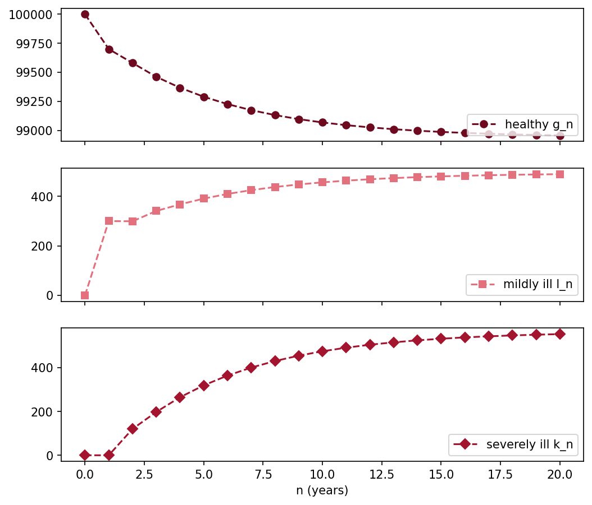
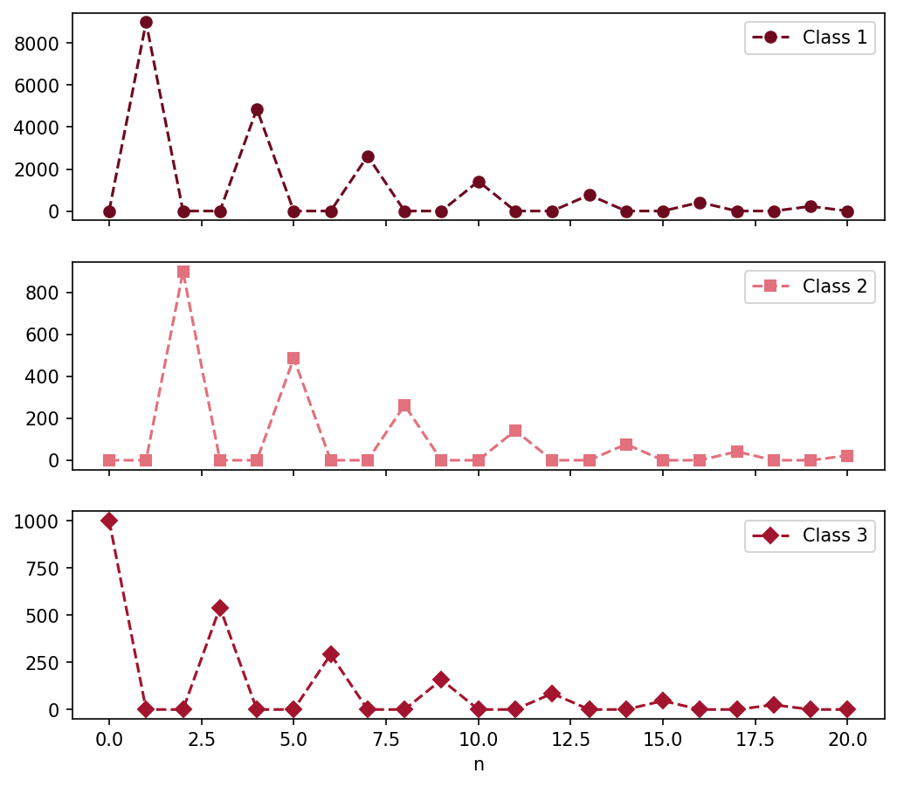

Chapter 2 · Discrete Dynamical Systems with Several Variables
2.2Matrix Models
If all recursion rules are linear, the system is written compactly as xn+1 = A xn with a matrix A and the state vector xn. One step is then a matrix–vector multiplication. Examples are a disease progression with three groups and the Leslie model for age classes.
For each figure of the section you will find the program that produces it. Change parameters and initial values and observe what happens. Figure and equation numbers refer to the book.
Fig. 2.7
Disease progression
xn+1 = A xn, x = (g, l, k): healthy, mildly ill, and severely ill
Each column of A states how one group is distributed over the three groups in one year. Because the column sums are 1, the total number of 100,000 persons is conserved.

# Fig. 2.7: Disease progression as a linear system (book, Section 2.2, Eq. 2.8)
# x_{n+1} = A x_n with x = (healthy, mildly ill, severely ill), x_0 = (100000, 0, 0), one step = one year
# (c) 2026 Philipp Kügler · Program for the book "Dynamical Systems in the Life Sciences" · MIT License (see LICENSE)
using Printf, Plots, LinearAlgebra
A = [0.997 0.6 0;
0.003 0 0.35;
0 0.4 0.65]
N = 20
X = zeros(3, N + 1)
X[:, 1] = [100000, 0, 0]
for k in 1:N
X[:, k + 1] = A * X[:, k] # matrix times vector
end
@printf("x_20 = (%.0f, %.0f, %.0f)\n", X[:, end]...)
s = vec(sum(A, dims = 1))
@printf("column sums of A: %g %g %g -> the total number is conserved: %.0f\n", s..., sum(X[:, end]))
namen = ["healthy g_n", "mildly ill l_n", "severely ill k_n"]
farben = [RGB(0.43, 0.04, 0.12), RGB(0.89, 0.44, 0.49), RGB(0.64, 0.08, 0.18)]; zeichen = [:circle, :rect, :diamond]
bilder = [begin
b = plot(0:N, X[i, :], ls = :dash, marker = zeichen[i], color = farben[i], label = namen[i], legend = :right)
b
end for i in 1:3]
display(plot(bilder..., layout = (3, 1), size = (800, 700), xlabel = "n (years)"))% Fig. 2.7: Disease progression as a linear system (book, Section 2.2, Eq. 2.8)
% x_{n+1} = A x_n with x = (healthy, mildly ill, severely ill), x_0 = (100000, 0, 0), one step = one year
% (c) 2026 Philipp Kügler · Program for the book "Dynamical Systems in the Life Sciences" · MIT License (see LICENSE)
A = [0.997 0.6 0;
0.003 0 0.35;
0 0.4 0.65];
N = 20;
X = zeros(3, N + 1);
X(:, 1) = [100000; 0; 0];
for k = 1:N
X(:, k + 1) = A * X(:, k); % matrix times vector
end
fprintf('x_20 = (%.0f, %.0f, %.0f)\n', X(:, end));
fprintf('column sums of A: %g %g %g -> the total number is conserved: %.0f\n', sum(A), sum(X(:, end)));
namen = {'healthy g_n', 'mildly ill l_n', 'severely ill k_n'};
farben = [0.43 0.04 0.12; 0.89 0.44 0.49; 0.64 0.08 0.18]; marker = 'osd';
for i = 1:3
subplot(3, 1, i);
plot(0:N, X(i, :), ['--' marker(i)], 'Color', farben(i, :)); legend(namen{i}, 'Location', 'southeast');
end
xlabel('n (years)');# Fig. 2.7: Disease progression as a linear system (book, Section 2.2, Eq. 2.8)
# x_{n+1} = A x_n with x = (healthy, mildly ill, severely ill), x_0 = (100000, 0, 0), one step = one year
# (c) 2026 Philipp Kügler · Program for the book "Dynamical Systems in the Life Sciences" · MIT License (see LICENSE)
import numpy as np
import matplotlib.pyplot as plt
A = np.array([[0.997, 0.6, 0],
[0.003, 0, 0.35],
[0, 0.4, 0.65]])
N = 20
X = np.zeros((N + 1, 3))
X[0] = [100000, 0, 0]
for n in range(N):
X[n + 1] = A @ X[n] # matrix times vector
print("x_20 = (%.0f, %.0f, %.0f)" % tuple(X[N]))
print("column sums of A: %g %g %g" % tuple(A.sum(axis=0)), "-> the total number is conserved: %.0f" % X[N].sum())
fig, axs = plt.subplots(3, 1, figsize=(8, 7), sharex=True)
farben = [(0.43, 0.04, 0.12), (0.89, 0.44, 0.49), (0.64, 0.08, 0.18)]
for i, (name, m) in enumerate(zip(["healthy g_n", "mildly ill l_n", "severely ill k_n"], "osD")):
axs[i].plot(np.arange(N + 1), X[:, i], "--", marker=m, color=farben[i], label=name)
axs[i].legend(loc="lower right")
axs[2].set_xlabel("n (years)")
plt.show()# Fig. 2.7: Disease progression as a linear system (book, Section 2.2, Eq. 2.8)
# x_{n+1} = A x_n with x = (healthy, mildly ill, severely ill), x_0 = (100000, 0, 0), one step = one year
# (c) 2026 Philipp Kügler · Program for the book "Dynamical Systems in the Life Sciences" · MIT License (see LICENSE)
A <- matrix(c(0.997, 0.6, 0,
0.003, 0, 0.35,
0, 0.4, 0.65), nrow = 3, byrow = TRUE)
N <- 20
X <- matrix(0, 3, N + 1)
X[, 1] <- c(100000, 0, 0)
for (k in 1:N) X[, k + 1] <- A %*% X[, k] # matrix times vector
cat(sprintf("x_20 = (%.0f, %.0f, %.0f)\n", X[1, N + 1], X[2, N + 1], X[3, N + 1]))
cat(sprintf("column sums of A: %g %g %g -> the total number is conserved: %.0f\n", colSums(A)[1], colSums(A)[2], colSums(A)[3], sum(X[, N + 1])))
namen <- c("healthy g_n", "mildly ill l_n", "severely ill k_n")
farben <- c(rgb(0.43, 0.04, 0.12), rgb(0.89, 0.44, 0.49), rgb(0.64, 0.08, 0.18)); zeichen <- c(16, 15, 18)
par(mfrow = c(3, 1), mar = c(4, 4, 1, 1))
for (i in 1:3) {
plot(0:N, X[i, ], type = "o", lty = 2, pch = zeichen[i], col = farben[i], xlab = if (i == 3) "n (years)" else "", ylab = "")
legend("bottomright", legend = namen[i], col = farben[i], pch = zeichen[i], lty = 2)
}Output in the command window
x_20 = (98957, 490, 553)
column sums of A: 1 1 1 -> the total number is conserved: 100000Fig. 2.9
Leslie model with three age classes
x1,n+1 = 9 x3,n, x2,n+1 = 0.1 x1,n, x3,n+1 = 0.6 x2,n
Only the oldest class has offspring. The population therefore pulsates with period 3, and in each period it shrinks by the factor 9 · 0.1 · 0.6 = 0.54: it dies out.

# Fig. 2.9: Leslie model with three age classes (book, Section 2.2, Eq. 2.11)
# x_{n+1} = L x_n with birth rate 9 of class 3 and survival rates 0.1 and 0.6, x_0 = (0, 0, 1000)
# (c) 2026 Philipp Kügler · Program for the book "Dynamical Systems in the Life Sciences" · MIT License (see LICENSE)
using Printf, Plots, LinearAlgebra
L = [0 0 9;
0.1 0 0;
0 0.6 0]
N = 20
X = zeros(3, N + 1)
X[:, 1] = [0, 0, 1000]
for k in 1:N
X[:, k + 1] = L * X[:, k]
end
println("class 3 every three steps: ", join([@sprintf("%.1f", x) for x in X[3, 1:3:end]], " "))
@printf("factor per period: 9 * 0.1 * 0.6 = %g < 1, the population dies out\n", 9 * 0.1 * 0.6)
namen = ["Class 1", "Class 2", "Class 3"]
farben = [RGB(0.43, 0.04, 0.12), RGB(0.89, 0.44, 0.49), RGB(0.64, 0.08, 0.18)]; zeichen = [:circle, :rect, :diamond]
bilder = [begin
b = plot(0:N, X[i, :], ls = :dash, marker = zeichen[i], color = farben[i], label = namen[i], legend = :right)
b
end for i in 1:3]
display(plot(bilder..., layout = (3, 1), size = (800, 700), xlabel = "n"))% Fig. 2.9: Leslie model with three age classes (book, Section 2.2, Eq. 2.11)
% x_{n+1} = L x_n with birth rate 9 of class 3 and survival rates 0.1 and 0.6, x_0 = (0, 0, 1000)
% (c) 2026 Philipp Kügler · Program for the book "Dynamical Systems in the Life Sciences" · MIT License (see LICENSE)
L = [0 0 9;
0.1 0 0;
0 0.6 0];
N = 20;
X = zeros(3, N + 1);
X(:, 1) = [0; 0; 1000];
for k = 1:N
X(:, k + 1) = L * X(:, k);
end
fprintf('class 3 every three steps: '); fprintf('%.1f ', X(3, 1:3:end)); fprintf('\n');
fprintf('factor per period: 9 * 0.1 * 0.6 = %g < 1, the population dies out\n', 9 * 0.1 * 0.6);
farben = [0.43 0.04 0.12; 0.89 0.44 0.49; 0.64 0.08 0.18]; marker = 'osd';
for i = 1:3
subplot(3, 1, i);
plot(0:N, X(i, :), ['--' marker(i)], 'Color', farben(i, :)); legend(sprintf('Class %d', i));
end
xlabel('n');# Fig. 2.9: Leslie model with three age classes (book, Section 2.2, Eq. 2.11)
# x_{n+1} = L x_n with birth rate 9 of class 3 and survival rates 0.1 and 0.6, x_0 = (0, 0, 1000)
# (c) 2026 Philipp Kügler · Program for the book "Dynamical Systems in the Life Sciences" · MIT License (see LICENSE)
import numpy as np
import matplotlib.pyplot as plt
L = np.array([[0, 0, 9],
[0.1, 0, 0],
[0, 0.6, 0]])
N = 20
X = np.zeros((N + 1, 3))
X[0] = [0, 0, 1000]
for n in range(N):
X[n + 1] = L @ X[n]
print("class 3 every three steps:", " ".join(f"{x:.1f}" for x in X[0:N + 1:3, 2]))
print(f"factor per period: 9 * 0.1 * 0.6 = {9 * 0.1 * 0.6:g} < 1, the population dies out")
fig, axs = plt.subplots(3, 1, figsize=(8, 7), sharex=True)
farben = [(0.43, 0.04, 0.12), (0.89, 0.44, 0.49), (0.64, 0.08, 0.18)]
for i, m in enumerate("osD"):
axs[i].plot(np.arange(N + 1), X[:, i], "--", marker=m, color=farben[i], label=f"Class {i + 1}")
axs[i].legend(loc="upper right")
axs[2].set_xlabel("n")
plt.show()# Fig. 2.9: Leslie model with three age classes (book, Section 2.2, Eq. 2.11)
# x_{n+1} = L x_n with birth rate 9 of class 3 and survival rates 0.1 and 0.6, x_0 = (0, 0, 1000)
# (c) 2026 Philipp Kügler · Program for the book "Dynamical Systems in the Life Sciences" · MIT License (see LICENSE)
L <- matrix(c(0, 0, 9,
0.1, 0, 0,
0, 0.6, 0), nrow = 3, byrow = TRUE)
N <- 20
X <- matrix(0, 3, N + 1)
X[, 1] <- c(0, 0, 1000)
for (k in 1:N) X[, k + 1] <- L %*% X[, k]
cat("class 3 every three steps:", sprintf("%.1f", X[3, seq(1, N + 1, 3)]), "\n")
cat(sprintf("factor per period: 9 * 0.1 * 0.6 = %g < 1, the population dies out\n", 9 * 0.1 * 0.6))
namen <- c("Class 1", "Class 2", "Class 3")
farben <- c(rgb(0.43, 0.04, 0.12), rgb(0.89, 0.44, 0.49), rgb(0.64, 0.08, 0.18)); zeichen <- c(16, 15, 18)
par(mfrow = c(3, 1), mar = c(4, 4, 1, 1))
for (i in 1:3) {
plot(0:N, X[i, ], type = "o", lty = 2, pch = zeichen[i], col = farben[i], xlab = if (i == 3) "n" else "", ylab = "")
legend("bottomright", legend = namen[i], col = farben[i], pch = zeichen[i], lty = 2)
}Output in the command window
class 3 every three steps: 1000.0 540.0 291.6 157.5 85.0 45.9 24.8
factor per period: 9 * 0.1 * 0.6 = 0.54 < 1, the population dies outMATLAB apps from the course
Download, put into a folder, and type the name without extension in MATLAB, e.g. leslie_app. The apps use the graphical user interface of MATLAB and do not run in GNU Octave. Their user interface is in German.
- leslie_app.mLeslie model with three age classes